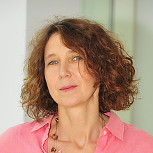

Introduction
The University of Maryland, College Park presents the 1st Workshop on Autonomy, Robotics and Cognition. The event will be held in the Colony Ballroom of the Adele H. Stamp Student Union on the 2nd and 3rd of October, 2017. The workshop is hosted by the University of Maryland Institute for Advanced Computer Studies (UMIACS) and the Institute for Systems Research (ISR) .
Organizers
Dr. Yiannis Aloimonos
Professor
yiannis[at]cs[dot]umd[dot]edu
Website
Dr. John Baras
Professor
baras[at]isr[dot]umd[dot]edu
Website

Dr. Cornelia Fermüller
Associate Research Scientist
fer[at]cfar[dot]umd[dot]edu
Website
We look forward to meeting you on the 2nd and 3rd of October, 2017. Please follow the links for more information regarding the workshop and registration details.